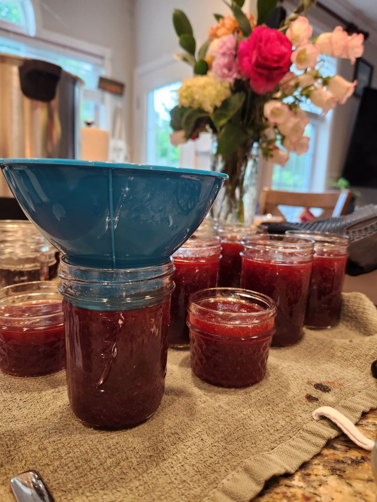

A taste adventure from farm to jar. Here are a few favorites.
New in 2026
Smoked Heirloom Tomato Jam
Gathering Springs Farm · Middleburg, VA
Peak-season heirloom tomatoes smoked on our Traeger wood smoker, then handcrafted into jam with select spices and a touch of sugar.
Try it on
Cheese & charcuterie
Grilled cheese
Fries
Ricotta toast
Pasta & pizza
Straight from the jar
New in 2026
24-Hour Apple Butter
Out on a Limb Orchard · Manassas, VA
You can’t rush epic flavor! Apples simmered low and slow for 24 hours with select spices and a hint of vanilla, so the natural sugars caramelize.
Try it on
Oatmeal
Toast & pancakes
Apple pie
Cupcake frosting
Pork or chicken glaze
New in 2026
Dilly Beans!!!
Ignacio’s Produce · Westmoreland County, VA
Tested by our neighborhood kids. The “!!!” is for the look on the faces of Ingrid and Penny (and Sabrina, Jude, Miles, Matthew and Lionel) when they realized they actually love green beans. Adults love them too.
Local, premium ingredients harvested for peak flavor.
Never any artificial preservatives or additives.
High-quality produce means added salt and sugar stay low, so the true flavors can sing.

Our story
“You should really sell this!”
Kristen grew up in a small California town where everyone knew how to “put up” food. After years of neighbors begging for more jars, she started selling small batches in her Haymarket neighborhood. Today Batch 12 partners with local Virginia farmers and orchards.
Find us across the street from the Haymarket Playground.
Every Sunday
Haymarket Farmer’s Market
Look for us at the Gathering Springs Farm stand.
Flash sales
Follow us on Instagram
Flash sales for local pickup or delivery only. @TheRealBatch12
A note from Kristen
“Every recipe carries a piece of my heart, a memory, or a lesson learned from the generations before me. When you open a jar from Batch 12, you're tasting a labor of love.”
Kristen Marie Stoner DonadjeFounder & Head Preserver
Be the first to know
Join the Batch 12 list
Get an email when new flavors are ready, when we’ll be at the market, and when an Instagram flash sale starts. No spam, just jars.